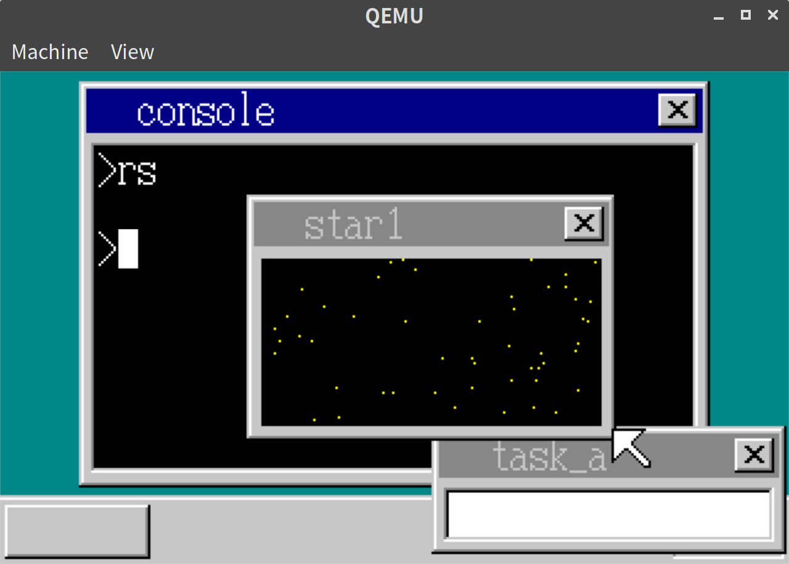
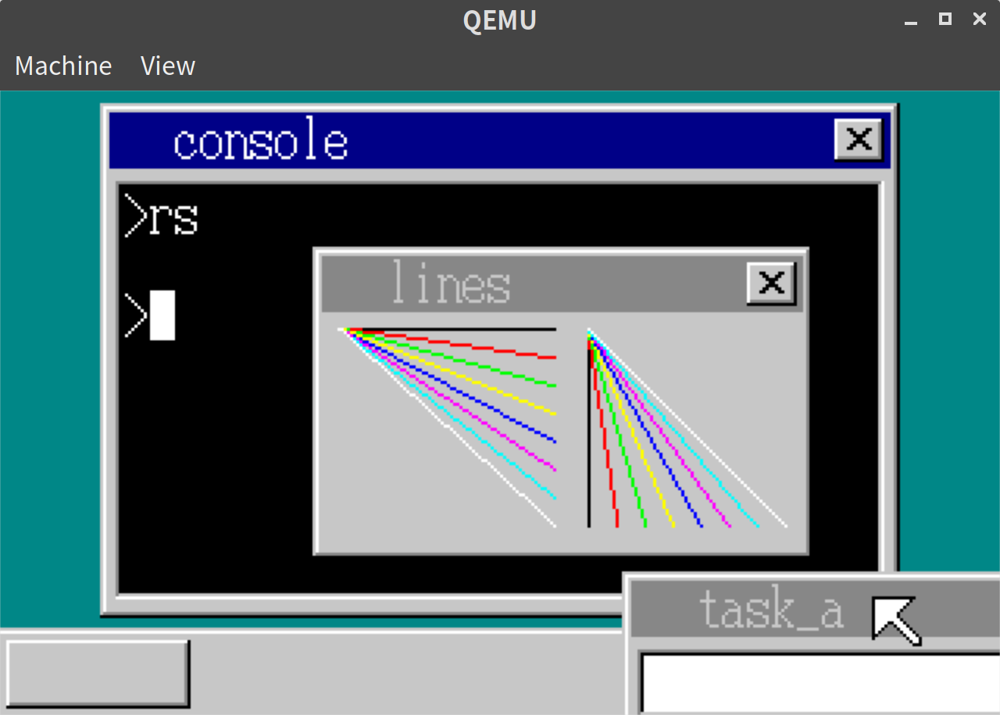
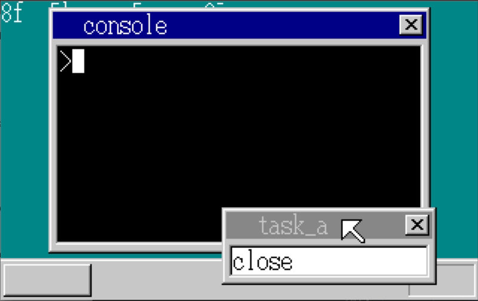

「30日でできる！OS自作入門」をRustで。23日目
「30日でできる！OS自作入門 」のC言語の部分をできるだけRustですすめてみる。今回は23日目の内容。
mallocを実装する
OSからアプリ用のメモリを確保してアプリに渡せるようにする
// console.rs
#[no_mangle]
pub extern "C" fn hrb_api(/*省略*/) -> usize {
// 省略
} else if edx == 8 {
let memman = unsafe { &mut *((ebx as usize + ds_base) as *mut MemMan) };
*memman = MemMan::new();
let bytes = ecx as u32 & 0xfffffff0;
memman.free(eax as u32, bytes).unwrap();
} else if edx == 9 {
let bytes = (ecx as u32 + 0x0f) & 0xfffffff0;
let reg_eax = unsafe { &mut *((reg + 7 * 4) as *mut u32) };
let memman = unsafe { &mut *((ebx as usize + ds_base) as *mut MemMan) };
*reg_eax = memman.alloc(bytes).unwrap();
} else if edx == 10 {
let bytes = (ecx as u32 + 0x0f) & 0xfffffff0;
let memman = unsafe { &mut *((ebx as usize + ds_base) as *mut MemMan) };
memman.free(eax as u32, bytes).unwrap();
}
0
}アプリ側は以下のようになる。
// hello/src/lib.rs
extern "C" {
fn _api_initmalloc();
fn _api_malloc(size: usize) -> usize;
fn _api_free(addr: usize, size: usize);
}
#[no_mangle]
#[start]
pub extern "C" fn hrmain() {
put_string(b"hello".as_ptr() as usize);
unsafe { _api_initmalloc(); }
let buf_addr = unsafe { _api_malloc(150 * 50) };
let sheet_index = open_window(
buf_addr,
150,
50,
-1,
b"hello".as_ptr() as usize,
);
box_fil_window(sheet_index as usize, 8, 36, 141, 43, 3);
put_str_window(
sheet_index as usize,
28,
28,
0,
12,
b"hello again".as_ptr() as usize,
);
unsafe { _api_free(buf_addr, 150 * 50); }
end()
}[CS:0x0020]などのセグメントレジスタつきの表記がインラインアセンブリだと扱いづらく、別ファイルで本通りのアセンブリ言語でのコードを書くことにした。
実行結果
実行結果の画面としては変わらないが、無事mallocをつかって表示ができた。
点を描画
点を描画するAPIをつくる。本の内容は少しとばして、最初から複数ランダムで表示、および最後に描画するようにする。
// console.rs
#[no_mangle]
pub extern "C" fn hrb_api(/*省略*/) -> usize {
// 省略
} else if edx == 6 {
let mut sheet_index = ebx as usize;
let mut refresh = true;
if sheet_index >= MAX_SHEETS { // refreshしたくない場合はMAX_SHEETS = 256を足す
refresh = false;
sheet_index -= MAX_SHEETS;
}
let sheet = sheet_manager.sheets_data[sheet_index];
let string = unsafe { *((ebp as usize + ds_base) as *const [u8; 30]) };
use crate::vga::ScreenWriter;
use core::fmt::Write;
let mut writer = ScreenWriter::new(
Some(sheet.buf_addr),
to_color(eax as i8).unwrap(),
esi as usize,
edi as usize,
sheet.width as usize,
sheet.height as usize,
);
write!(writer, "{}", from_utf8(&string[0..(ecx as usize)]).unwrap()).unwrap();
if refresh {
sheet_manager.refresh(sheet_index, esi, edi, esi + ecx * 8, edi + 16);
}
} else if edx == 7 {
let mut sheet_index = ebx as usize;
let mut refresh = true;
if sheet_index >= MAX_SHEETS { // refreshしたくない場合はMAX_SHEETS = 256を足す
refresh = false;
sheet_index -= MAX_SHEETS;
}
let sheet = sheet_manager.sheets_data[sheet_index];
boxfill(
sheet.buf_addr,
sheet.width as isize,
to_color(ebp as i8).unwrap(),
eax as isize,
ecx as isize,
esi as isize,
edi as isize,
);
if refresh {
sheet_manager.refresh(sheet_index, eax, ecx, esi + 1, edi + 1);
}
} else if edx == 8 {
// 省略
} else if edx == 11 {
// 点の描画
let mut sheet_index = ebx as usize;
let mut refresh = true;
if sheet_index >= MAX_SHEETS {
refresh = false;
sheet_index -= MAX_SHEETS;
}
let sheet = sheet_manager.sheets_data[sheet_index];
let ptr = unsafe {
&mut *((sheet.buf_addr + sheet.width as usize * edi as usize + esi as usize) as *mut u8)
};
*ptr = eax as u8;
if refresh {
sheet_manager.refresh(sheet_index, esi, edi, esi + 1, edi + 1);
}
} else if edx == 12 {
// refreshのみをするシステムコール
let sheet_index = ebx as usize;
sheet_manager.refresh(sheet_index, eax, ecx, esi, edi);
}
0
}これらのシステムコールを使って、アプリケーション側は以下のようにする。
// hello/src/lib.rs
const SHEET_UNREFRESH_OFFSET: usize = 256;
#[no_mangle]
#[start]
pub extern "C" fn hrmain() {
unsafe {
_api_initmalloc();
}
let buf_addr = unsafe { _api_malloc(150 * 100) };
let sheet_index = open_window(buf_addr, 150, 100, -1, b"star1".as_ptr() as usize) as usize;
box_fil_window(
sheet_index + SHEET_UNREFRESH_OFFSET,
6,
26,
143,
93,
0, /* 黒 */
);
let mut rng = StdRng::seed_from_u64(123);
for i in 0..50 {
let x = (rng.next_u32() % 137 + 6) as i32;
let y = (rng.next_u32() % 67 + 26) as i32;
point_window(sheet_index + SHEET_UNREFRESH_OFFSET, x, y, 3 /* 黄 */);
}
refresh_window(sheet_index, 6, 26, 144, 94);
unsafe {
_api_free(buf_addr, 150 * 100);
}
end()
}
fn point_window(sheet_index: usize, x: i32, y: i32, color: i32) {
unsafe {
asm!("
MOV EDX,11
INT 0x40
" : : "{EBX}"(sheet_index), "{ESI}"(x), "{EDI}"(y), "{EAX}"(color) : : "intel");
}
}
fn refresh_window(sheet_index: usize, x0: i32, y0: i32, x1: i32, y1: i32) {
unsafe {
asm!("
MOV EDX,12
INT 0x40
" : : "{EBX}"(sheet_index), "{EAX}"(x0), "{ECX}"(y0), "{ESI}"(x1), "{EDI}"(y1) : : "intel");
}
}ここで、ランダムな点を描画するため、randクレートを導入している。randクレートはCargo.tomlに
// Cargo.toml
[dependencies.rand]
version = "0.6.0"
default-features = falseのように書けば、no_stdで使えるようだ。
実行結果
以下の通り、点がランダムに複数描画されているウィンドウを表示できた。

線の描画
次に、線の描画もできるようにする。
// console.rs
#[no_mangle]
pub extern "C" fn hrb_api(/*省略*/) -> usize {
// 省略
} else if edx == 13 {
let mut sheet_index = ebx as usize;
let mut refresh = true;
if sheet_index >= MAX_SHEETS {
refresh = false;
sheet_index -= MAX_SHEETS;
}
let sheet = sheet_manager.sheets_data[sheet_index];
draw_line(sheet.buf_addr, sheet.width, eax, ecx, esi, edi, ebp);
if refresh {
sheet_manager.refresh(sheet_index, eax, ecx, esi + 1, edi + 1);
}
}
0
}draw_lineはvga.rsに書く。
// vga.rs
pub fn draw_line(buf_addr: usize, bxsize: i32, x0: i32, y0: i32, x1: i32, y1: i32, color: i32) {
let mut dx = x1 - x0;
let mut dy = y1 - y0;
let mut x = x0 << 10;
let mut y = y0 << 10;
let length: i32;
if dx < 0 {
dx = -dx;
}
if dy < 0 {
dy = -dy;
}
if dx >= dy {
length = dx + 1;
if x0 > x1 {
dx = -1024;
} else {
dx = 1024;
}
if y0 <= y1 {
dy = ((y1 - y0 + 1) << 10) / length;
} else {
dy = ((y1 - y0 - 1) << 10) / length;
}
} else {
length = dy + 1;
if y0 > y1 {
dy = -1024;
} else {
dy = 1024;
}
if x0 <= x1 {
dx = ((x1 - x0 + 1) << 10) / length;
} else {
dx = ((x1 - x0 - 1) << 10) / length;
}
}
for _ in 0..length {
let ptr = unsafe { &mut *((buf_addr as i32 + (y >> 10) * bxsize + (x >> 10)) as *mut u8) };
*ptr = color as u8;
x += dx;
y += dy;
}
}本と同様、現状小数点の計算ができないため、<< 10 した上で計算し、計算結果を読み込むときに>> 10している。
アプリケーション側は以下のようなコードとする。
// hello/src/lib.rs
#[no_mangle]
#[start]
pub extern "C" fn hrmain() {
unsafe {
_api_initmalloc();
}
let buf_addr = unsafe { _api_malloc(160 * 100) };
let sheet_index = open_window(buf_addr, 160, 100, -1, b"lines".as_ptr() as usize) as usize;
let sheet_index_nonrefresh = sheet_index + SHEET_UNREFRESH_OFFSET;
for i in 0..8 {
unsafe { _api_linewin(sheet_index_nonrefresh, 8, 26, 77, i * 9 + 26, i) }
unsafe {
_api_linewin(sheet_index_nonrefresh, 88, 26, i * 9 + 88, 89, i);
}
}
refresh_window(sheet_index, 6, 26, 154, 90);
unsafe {
_api_free(buf_addr, 160 * 100);
}
end()
}_api_linewin はどうもインラインアセンブリでやるとfor iのiの値がかわってしまってうまく動かないので、本通りの内容をasmfunc.asmに書くことで対応した。
実行結果
以下の通り、線を描画することができた。

ウィンドウのクローズ
現状アプリが終了してもウィンドウが閉じないので、ウィンドウも閉じられるようにする。
// console.rs
#[no_mangle]
pub extern "C" fn hrb_api(/*省略*/) -> usize {
// 省略
} else if edx == 14 {
let sheet_index = ebx as usize;
sheet_manager.free(sheet_index);
} else if edx == 15 {
loop {
cli();
let task_manager = unsafe { &mut *(TASK_MANAGER_ADDR as *mut TaskManager) };
let task_index = task_manager.now_index();
let fifo = {
let task = &task_manager.tasks_data[task_index];
unsafe { &*(task.fifo_addr as *const Fifo) }
};
if fifo.status() == 0 {
if eax != 0 {
task_manager.sleep(task_index);
} else {
sti();
let reg_eax = unsafe { &mut *((reg + 7 * 4) as *mut i32) };
*reg_eax = -1;
return 0;
}
}
let i = fifo.get().unwrap();
sti();
if i <= 1 {
let task = &task_manager.tasks_data[task_index];
TIMER_MANAGER
.lock()
.init_timer(console.timer_index, task.fifo_addr, 1);
TIMER_MANAGER.lock().set_time(console.timer_index, 50);
} else if i == 2 {
console.cursor_c = Color::White
} else if i == 3 {
console.cursor_c = Color::Black
} else if 256 <= i && i <= 511 {
let reg_eax = unsafe { &mut *((reg + 7 * 4) as *mut u32) };
*reg_eax = i - 256;
return 0;
}
}
}
0
}14と15のシステムコールを追加した。14はウィンドウを閉じるだけのシステムコール、15はキー入力を受け付けるシステムコールとなる。
これにより、何かキーが入力されたらウィンドウを閉じる、ということができるようになる。
また、強制終了時にも閉じるように、SheetにTaskの情報を持たせ、アプリケーションの終了時にそのアプリケーション用のタスクにひもづいているSheetがまだ閉じていなかったら閉じるようにする。
// sheet.rs
#[derive(Debug, Clone, Copy, PartialEq, Eq)]
pub struct Sheet {
pub buf_addr: usize,
pub width: i32,
pub height: i32,
pub x: i32,
pub y: i32,
pub transparent: Option<Color>,
pub z: Option<usize>,
pub flag: SheetFlag,
pub task_index: usize, // <- 追加
}
impl Sheet {
pub fn new() -> Sheet {
Sheet {
buf_addr: 0,
width: 0,
height: 0,
x: 0,
y: 0,
transparent: None,
z: None,
flag: SheetFlag::AVAILABLE,
task_index: 0, // <- 追加
}
}
}// console.rs
#[no_mangle]
pub extern "C" fn hrb_api(/*省略*/) -> usize {
// 省略
} else if edx == 5 {
let sheet_index = sheet_manager.alloc().unwrap();
{
let task_manager = unsafe { &mut *(TASK_MANAGER_ADDR as *mut TaskManager) };
let task_index = task_manager.now_index();
let mut new_sheet = &mut sheet_manager.sheets_data[sheet_index];
new_sheet.set(ebx as usize + ds_base, esi, edi, to_color(eax as i8));
new_sheet.task_index = task_index; // <- 追加
}
// 省略
}
}
// 省略
pub fn cmd_app<'a>(&mut self, filename: &'a [u8], fat: &[u32; MAX_FAT]) {
// 省略
unsafe {
_start_app(
app_eip,
content_gdt * 8,
esp as i32,
app_gdt * 8,
esp0_addr as i32,
);
}
// 事後処理としてウィンドウのクローズを追加
{
let sheet_manager = unsafe { &mut *(self.sheet_manager_addr as *mut SheetManager) };
for i in 0..MAX_SHEETS {
let sheet = sheet_manager.sheets_data[i];
if sheet.task_index == task_index && sheet.flag != SheetFlag::AVAILABLE {
sheet_manager.free(i);
}
}
}
// 省略アプリケーションのコードとしては、上記の線描画のコードを少し修正して以下のようにする。
// hello/src/lib.rs
#[no_mangle]
#[start]
pub extern "C" fn hrmain() {
unsafe {
_api_initmalloc();
}
let buf_addr = unsafe { _api_malloc(160 * 100) };
let sheet_index = open_window(buf_addr, 160, 100, -1, b"lines".as_ptr() as usize) as usize;
let sheet_index_nonrefresh = sheet_index + SHEET_UNREFRESH_OFFSET;
for i in 0..8 {
unsafe { _api_linewin(sheet_index_nonrefresh, 8, 26, 77, i * 9 + 26, i) }
unsafe {
_api_linewin(sheet_index_nonrefresh, 88, 26, i * 9 + 88, 89, i);
}
}
refresh_window(sheet_index, 6, 26, 154, 90);
loop {
if get_key(1) == 0x0a {
break;
}
}
close_window(sheet_index);
unsafe {
_api_free(buf_addr, 160 * 100);
}
end()
}
fn close_window(sheet_index: usize) {
unsafe {
asm!("
MOV EDX,14
INT 0x40
" : : "{EBX}"(sheet_index) : : "intel");
}
}
fn get_key(mode: i32) -> usize {
let mut key: usize;
unsafe {
asm!("
MOV EDX,15
INT 0x40
" : "={EAX}"(key) : "{EAX}"(mode) : : "intel");
}
key
}実行結果
以下の通り、キー入力でのウィンドウの終了、および強制終了でのウィンドウ終了が確認でき

23日目は以上となる。ここまでの内容のコードはyoshitsugu/hariboteos_in_rustのday23としてタグを打ってある。